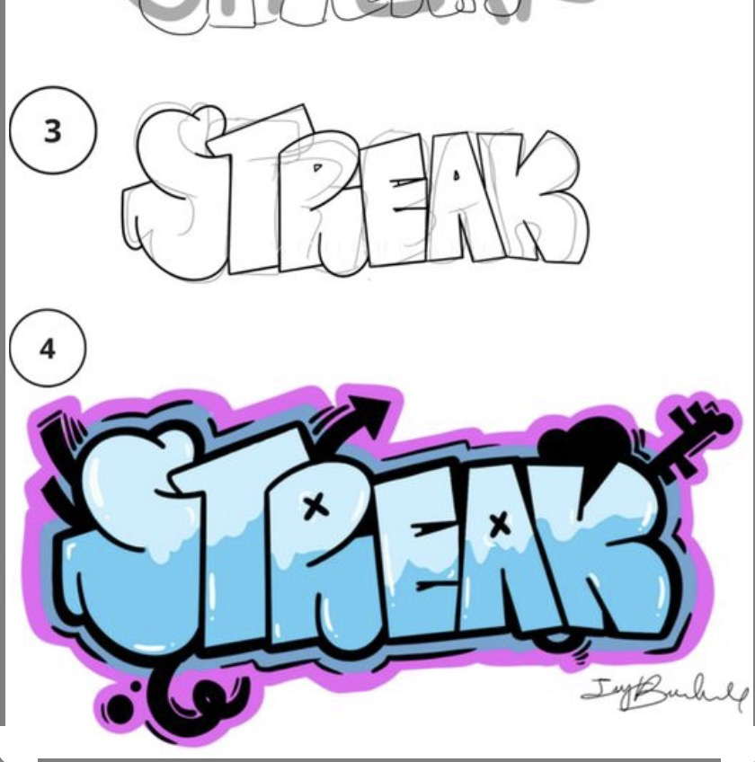
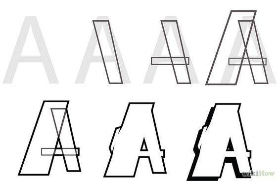
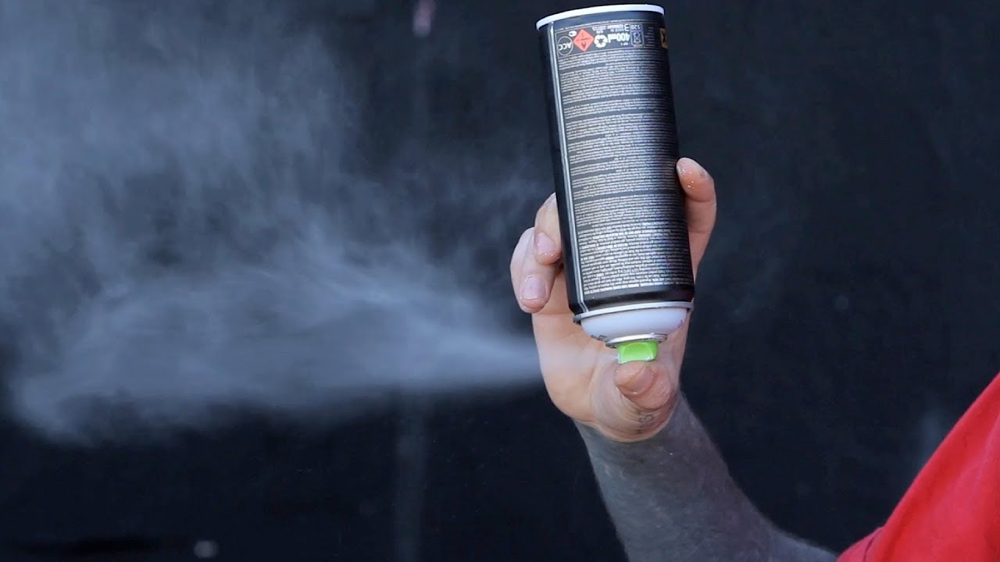
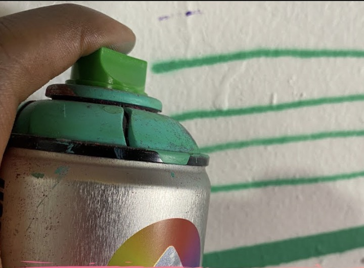

1. Practice the basic techniques, don’t start big! Try basic lettering first and gradually move your way up.
2. Plan your design! Try to design your plan on paper before starting a painting. It also gives you more room to make changes before you start painting large
3. Forget about color. Start with understanding the shapes and flow before thinking about the color scheme
1. Keep your caps clean. To do this turn your can upside down and spay. When it stops spraying paint and only releases gas you’re good. This wil prevent the paint from dring in your cap
2. Empty can? remove the cap and turn it upside down on a hard flat surface. Give it a good stomp and try again.
3. Forgot your diffrent caps? Dont worry. By applying certain amounts of pressure you can achieve different lines. Apply allot of pressure this will give you a thicker line. By applying less pressure you will get you a thinner line.
